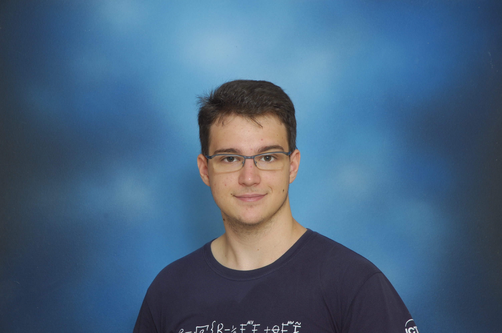
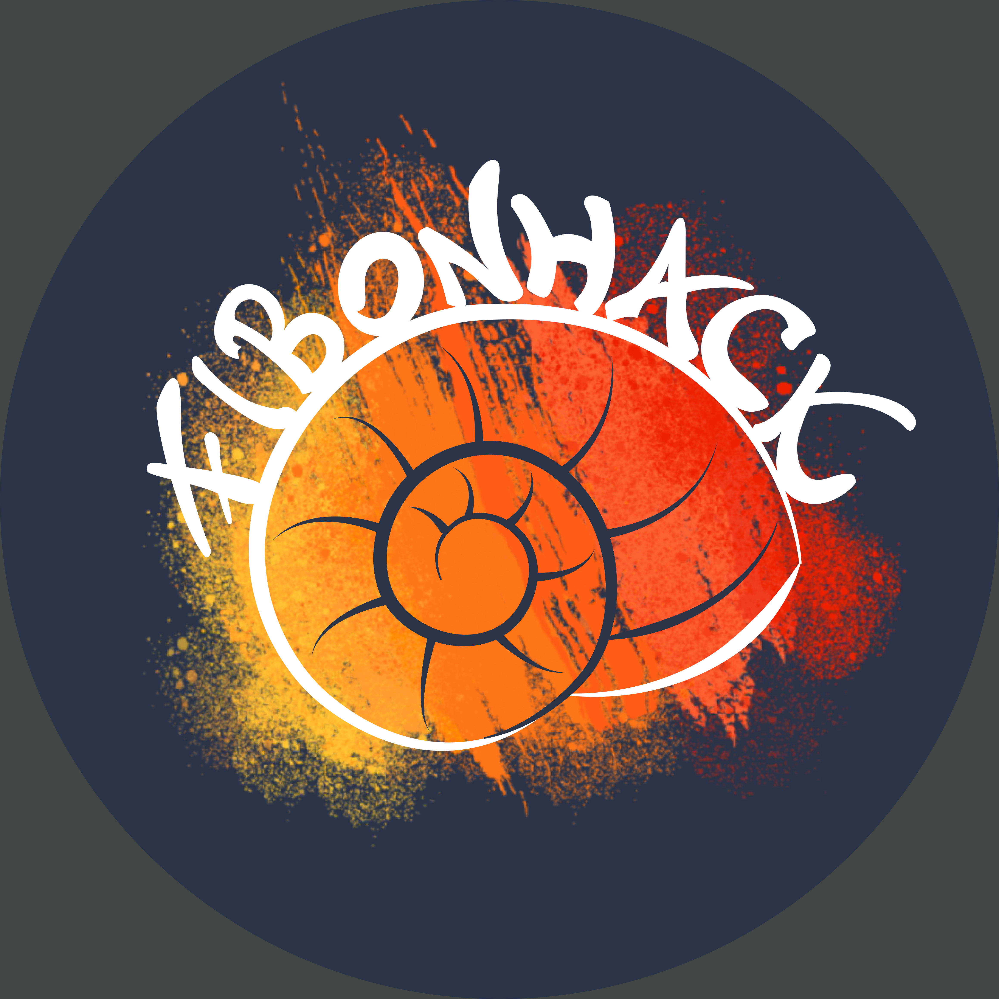

Al liceo ho partecipato alle Olimpiadi della Fisica, oltre che a quelle della Matematica e della Chimica. Per due volte ho rappresentato l'Italia alle IPhO (International Physics Olympiad), competizione mondiale fra i migliori studenti liceali del mondo in Fisica. Ho portato a casa una medaglia di bronzo nel 2014 ad Astana (Kazakhstan) e una d'argento nel 2015 in India, a Mumbai, facendo anche la miglior prestazione della squadra italiana.
Le Olimpiadi mi hanno dato molto, quindi ho deciso in diversi modi di ritornare qualcosa a questo fantastico mondo.
Alla fine del primo anno di Università ho iniziato a scrivere questo testo avanzato per aiutare i ragazzi a prepararsi alla fase nazionale ed internazionale delle Olimpiadi della Fisica. Potete trovare qui il repository con l'ultima versione delle dispense.
Quando trovate un errore, il modo migliore per segnalarlo è aprire una Issue, indicando in modo preciso di che cosa si tratta. Se siete davvero delle brave persone, potete contribuire al progetto facendo una merge request. Chiaramente potete anche segnalarmi le stesse cose per email, ma i metodi sopra elencati sono molto più efficaci.
Iniziativa di mia invenzione. Ho organizzato con altri allievi della Scuola Normale una settimana di stage avanzato per la preparazione alle Olimpiadi della Fisica, sia con l'obiettivo di migliorare il livello della squadra IPhO alle competizioni internazionali, sia di dare a tutti del materiale su cui imparare argomenti complicati di Fisica anche al liceo, con pochi prerequisiti.
Nell'anno scolastico 2022/2023, per la prima volta verrà organizzata una Gara a Squadre di Fisica a livello nazionale, all'interno del Progetto OLIFIS ufficiale dell'AIF. Io sono il principale responsabile dell'iniziativa.
Nel 2018 ho ottenuto la laurea triennale (bachelor). Lo stesso anno ho partecipato ad una scuola estiva a DESY, il sincrotrone tedesco nella cittá di Amburgo, lavorando per CMS, uno dei due esperimenti principali del CERN. Mi sono occupato di analisi dati, alla ricerca di bosoni di Higgs supersimmetrici.
Nel 2020 ho scritto la mia tesi magistrale, che tratta approcci machine-learning-like su computer quantistici.
Qui nel gruppo di sistemisti part-time alla Scuola Normale non ci basta fare solo gli incarichi che ci vengono assegnati, ci divertiamo a provare il software che sembra essere interessante al momento.
I nostri servizi secondari (web, monitoring, cron...) sono stati principalmente migrati a microservizi messi sul nostro cluster Kubernetes.
Tutto il software scritto da noi è sotto controllo versione e pesantemente integrato con GitLab.
Qualche tempo fa un nostro server ha avuto un hard-drive failure sulla /. Grazie alle nostre configurazioni centralizzate, in 20 minuti dopo la sostituzione del disco, la macchina era di nuovo online e operativa come prima.
I nostri dati e i nostri servizi sono in alta affidabilità, anche grazie ai filesystem distribuiti che utilizziamo.
Tutti i nostri servizi vengono monitorati costantemente per risolvere il prima possibile eventuali errori. Di solito è qualcuno che gioca con l'alimentazione dei nostri server.
L'unico modo per sopravvivere in una valanga di log è centralizzarli e anche noi abbiamo il nostro motore di ricerca per trovare la fonte degli errori.
Nel 2020, mentre scrivevo la mia tesi magistrale, ho partecipato a CyberChallenge, il percorso italiano di formazione in CyberSecurity per universitari, vincendo la finale nazionale con il team dell'Università di Pisa. Insieme ad altri studenti ed istruttori abbiamo fondato il CTF Team FibonHack. Mi occupo in particolare di binary exploitation. Sono anche stato nel team organizzatore di Olicyber 2021 e 2022.

In Normale non lo svago non può mancare. Uno dei passatempi che ho preferito ai primi anni è sicuramente il biliardino.
Un trailer della 24h da me realizzato, ridoppiando il celebre film Kung Fury.